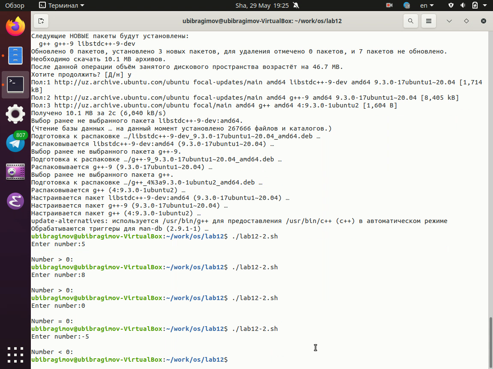
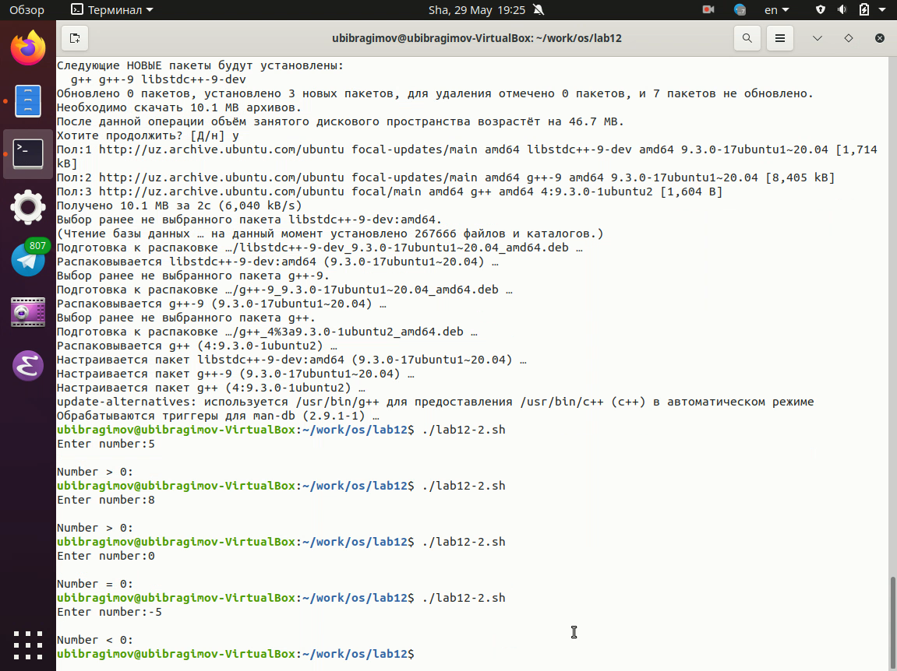
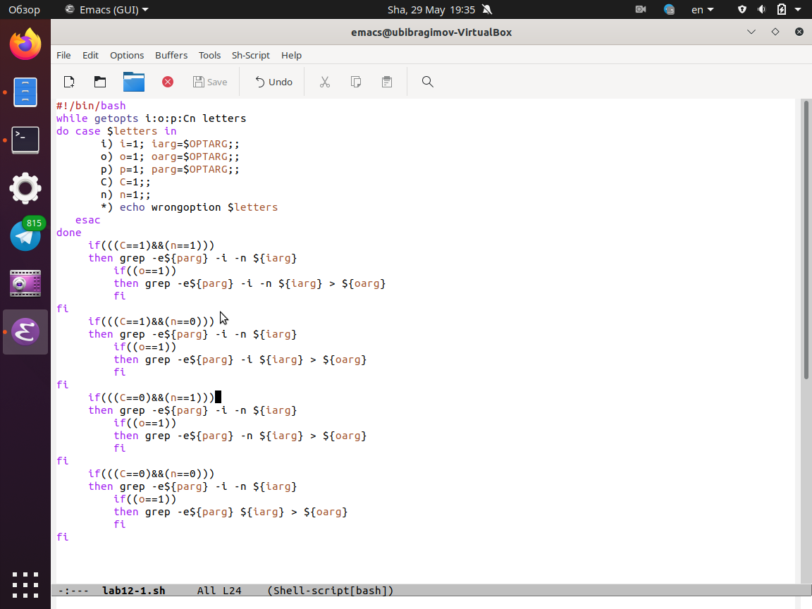
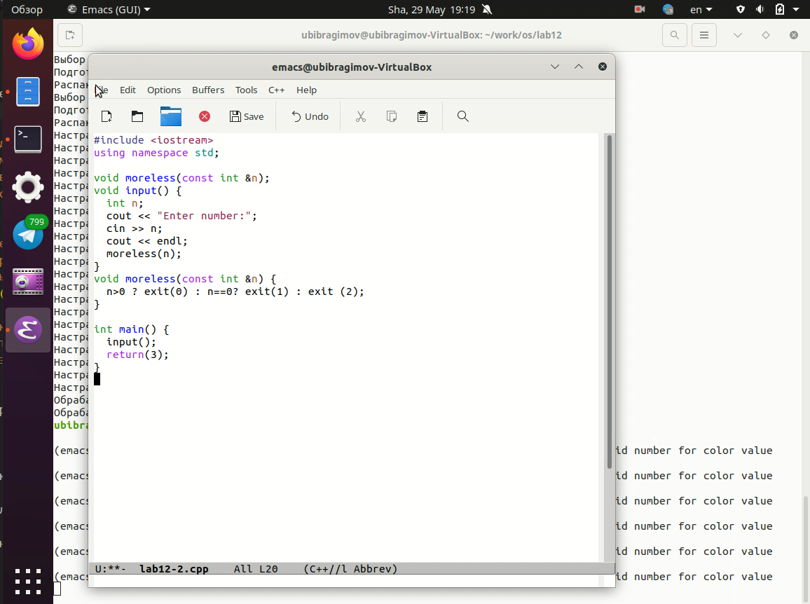
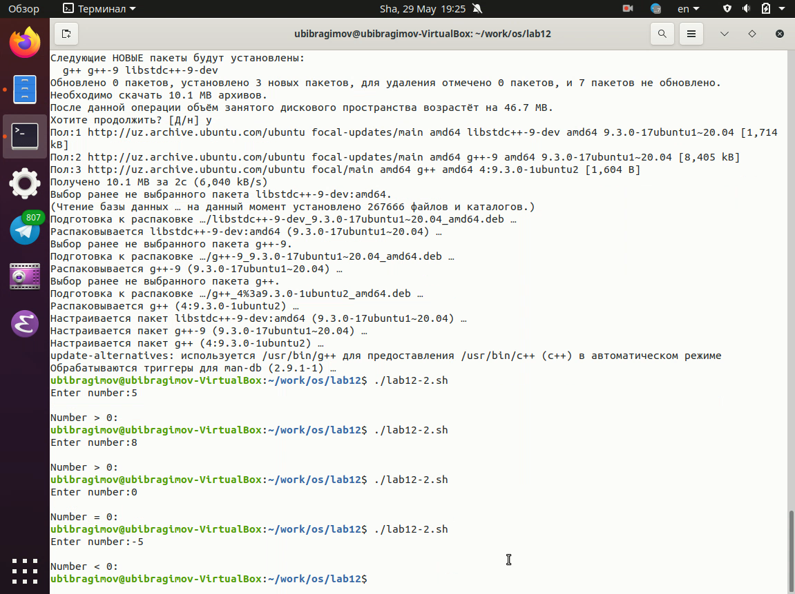
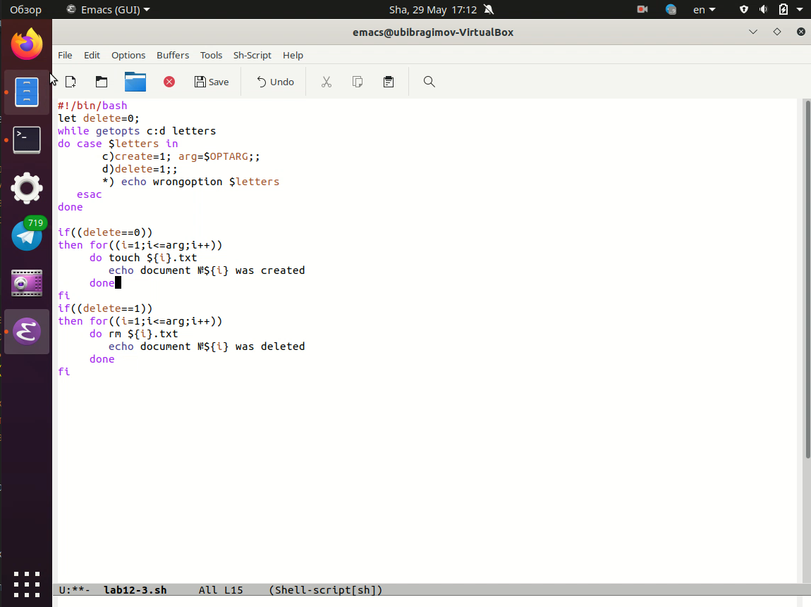
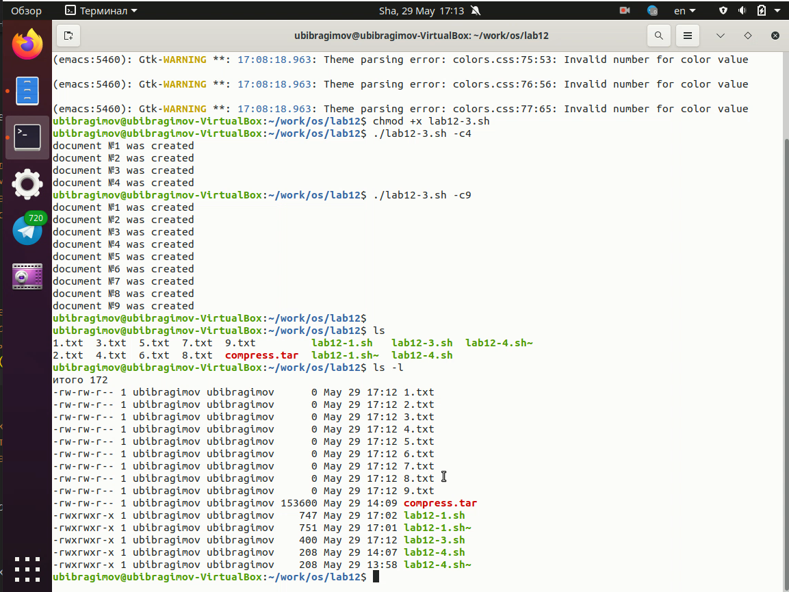
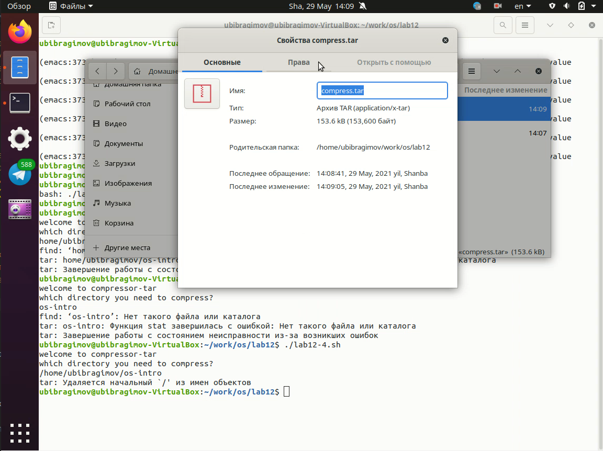
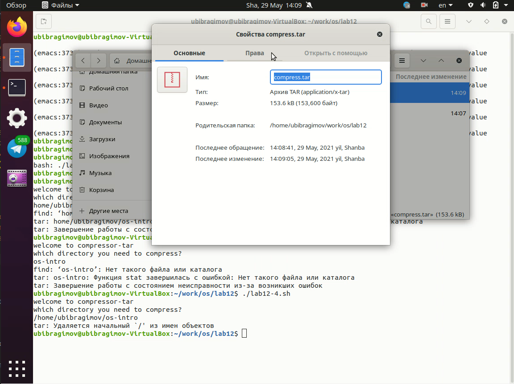

Отчёт по лабораторной работе №12 Ибрагимов Улугбек Ботырхонович
Изучить основы программирования в оболочке ОС UNIX, научиться писать более сложные командные файлы с использованием логических управляющих конструкций и циклов.
-i — прочитать данные из указанного файла-o — вывести данные в указанный файл-p - шаблон — указать шаблон для поиска-C — различать большие и малые буквы-n — выдавать номера строк
а затем ищет в указанном файле нужные строки, определяемые ключом -p
exit(n), передавая информацию в коде завершения в оболочку. Командный файл должен вызывать эту программу и, проанализировав с помощью команды $?, выдать сообщение о том, какое число было введено




tar запаковывает в архив все файлы в указанной директории. Модифицировать его так, чтобы запаковывались только те файлы, которые были изменены менее недели тому назад (использовать команду find)
 

В ходе выполнения Лабораторной работы №12, были приобретены навыки по написанию сложных скриптов и их адмнистрированию
getpods - эта утилита анализирует аргументы команд из исполняемого файла* - любая или пустая последовательность символов? - один любой символ[...] - любой из символов указанных в квадратных скобках с перечислением или указанием диапазонаcat N* - выдает все файлы начинающиеся с Ncat *N* - выдает все файлы содержащие Ncat - выдаст все файлы с однобуквенным расширением hello.o, hello.c, но не hello.cppprogram.? - выдаст program.comcat [a-d]* - выдаст файлы которые начинаются с буквы a и заканчиваются dbreak служит для прерывания цикла и передает управление программой команде, которая идет следующей за цикломfalse - логическое нет, отрицание, то есть дальнейшую остановку программы или переход в другую ветвь ветвления программы в зависимости от условийtrue - логическое да, согласие на дальнейшее исполнение программы согласно заданным условияif test -f man$s/$i.$s означает условие для проверки существования файла manwhile - выполняет цикл пока указанное в нем условие истинно (1, true), а until - выполняет цикл пока указанное в нем условие ложно (0, false)